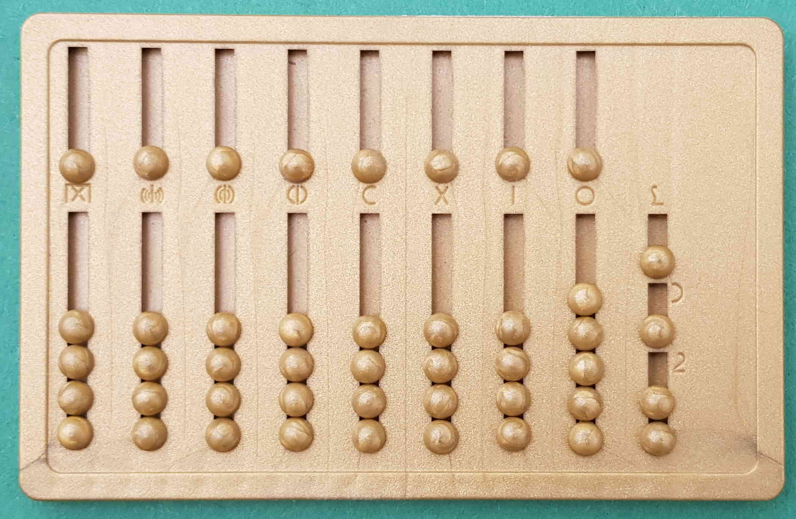
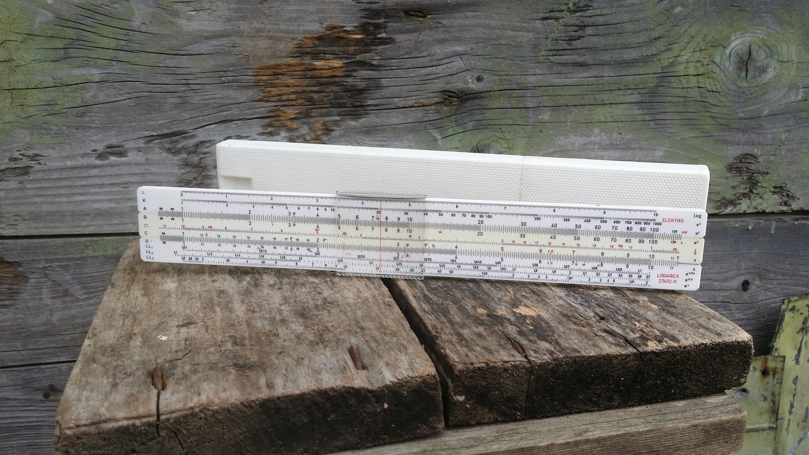
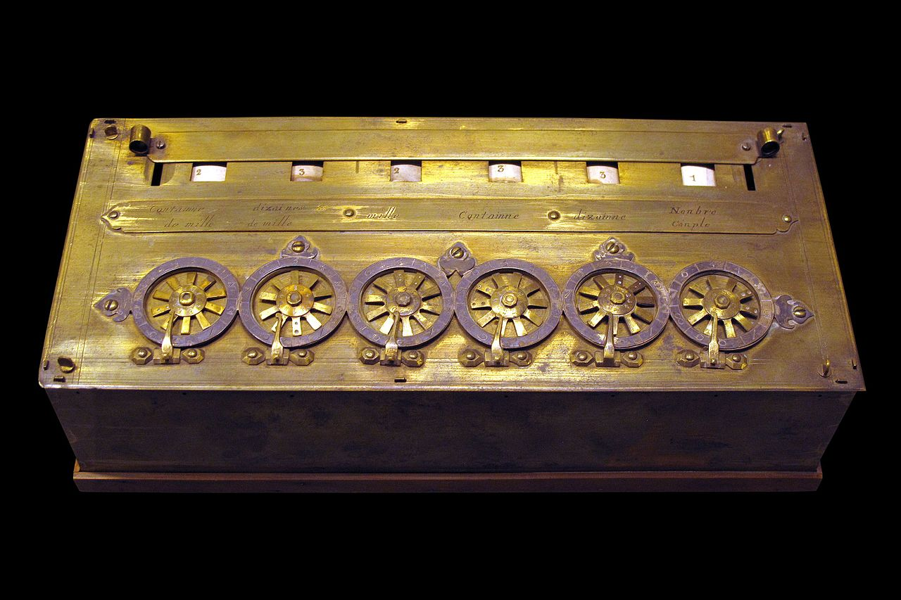
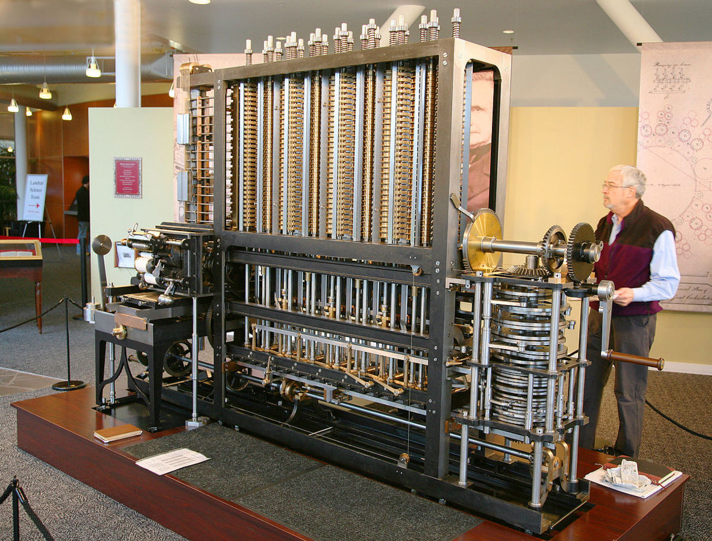
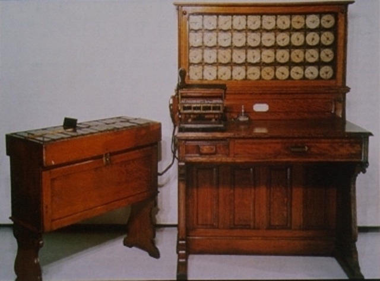
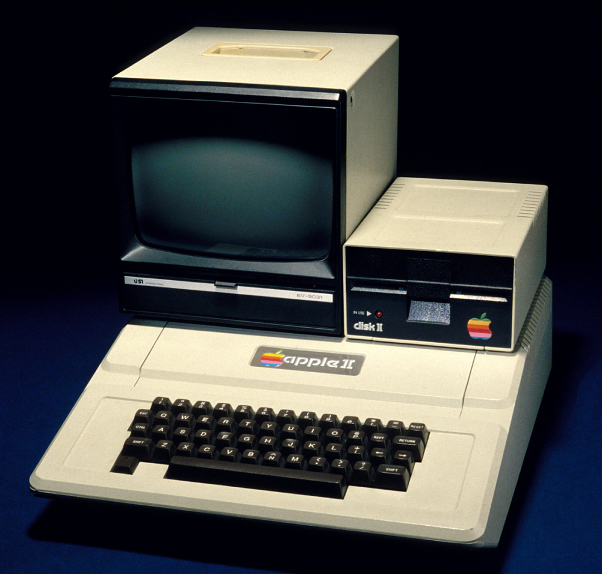

Vývoj počítačů
Počítače vznikly, aby si lidé ulehčili počítání a jiné logické operace. Vývoj nástrojů k počítání začal od primitivních kalkulaček až k moderním počítačům.
1. Abakus
Prvním nástrojem bylo počítadlo - abakus, které se používalo již ve starověké Mezopotámii a Číně. Jednalo se o jednoduchý nástroj k výpočtu základních aritmetických operací.

2. Logaritmické pravítko
Logaritmické pravítko - vynalezené v 17. století ve Francii umožňovalo složitějších výpočtů. Umožňovalo násobení a dělení pomocí logaritmických stupnic a také mocnění a umocňování. Bylo používané až do 70. let 20. století, kdy ho nahradily kalkulačky.

3. Pascalina
Mechanická kalkulačka Blaise Pascala, která uměla sčítat a odčítat pomocí ozubených koleček.

4. Leibnitzův počítací stroj
Vylepšený kalkulační stroj.
5. Arithmometer
První hromadně vyráběný počítací stroj.
6. Analytický stroj
Využíval tzv. děrných štítků (sloužily jako nosiče informací - jednalo se o destičky z kartonu ve kterých byly vyryty dírky. Původně byly využívány v tkalcovských stavech. Jednotlivé dírky potom stroji předávali hodnotu) Charlesovi Babbagovi pomáhala “první programátorka” Ada Lovelace.

7. Sčítací stroj
Herman Hollerith vytvořil sčítací stroj, který pomáhal při sčítání liduv USA v roce 1890. Díky tomu už sčítání lidu netrvalo roky. Je komplikovanější přístroj, snímal otvory na děrném štítku. Magnet potom sepnul motorek, který posouval číselník počítadla. Byl využíván bankami a pojišťovnami. Jeho firma se později stala základem společnosti IBM.
Děrné štítky byly využívány až do 70. let 20. století.

8. Generace počítačů
První skutečné počítače byly používány za druhé světové války
generace (před rokem 1940) - počítače s relé, velmi rozlehlé
generace (40.-50. léta) - využívaly elektronky, velké a poruchové - několik desítek skříní (např. ENIAC - první elektronkový počítač), rychlost stovek bitů za sekundu
generace (50.-60. léta) - nástup tranzistorů, menší a spolehlivější stroje (do 10 skříní), rychlost tisíce bitů
generace (60.-70. léta) - využití integrovaných obvodů (LSI), veliké od 1 do 5 skříní s rychlostí až statisíců bitů za sekundu
generace (od 70. let do dnes) - nástup mikroprocesorů, v osobních počítačích, rychlost dasahuje přes desítky milionnů bitů za vteřinu
Dnes se počítače vyvíjí směrem k umělé inteligenci, neuronovým sítím a kvantovým počítačům.
Důležité počítače Historie
- ENIAC – první elektronkový počítač, pouze pro matematické výpočty

- EDVAC – digitální a univerzálně využitelný
- Altair (1975) – první osobní počítač, mikroprocesor intel, 1 kB paměti
- Apple II. (1977) – procesor motorola 16 kB, velmi dobrý na svoji dobu

- IBM PC (1981) – položil základy moderního PC trhu
Druhy počítačů
- Kapesní počítače a telefony
- Laptopy
- Osobní počítač
- Workstationy
- Sálové počítače
- Superpočítače